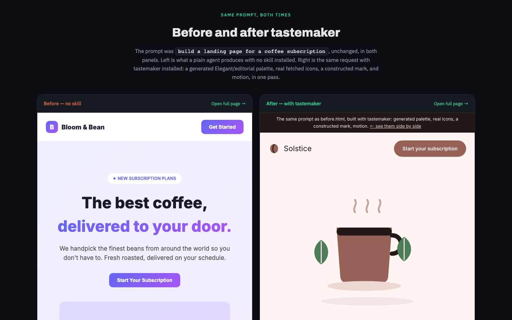
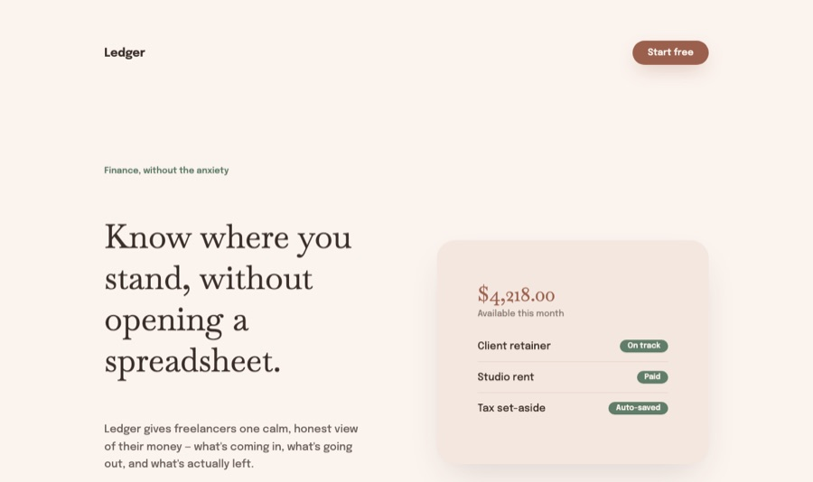
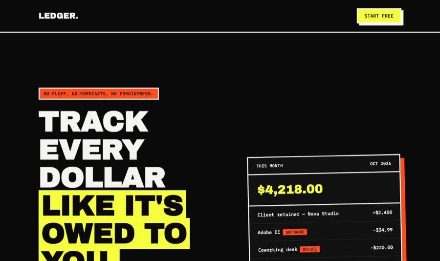

Reference study
Reads supplied sites, screenshots, demos, and category examples before selecting a direction.
The taste layer for coding agents. It studies the brief, picks a visual lane, builds with assets and motion, then remembers what you keep or reject.


Built for agents that ship frontend work
Drop it into Codex, Claude, Cursor, or any agent workflow. The rules are plain Markdown plus scripts, so the taste system stays inspectable.
Install in one command
Each capability changes how the agent works before the first component appears.
Reads supplied sites, screenshots, demos, and category examples before selecting a direction.
Picks a macrostructure, section rhythm, image language, and one deliberate rule break.
Uses screenshots, custom SVGs, icons, photos, or interface fragments instead of empty panels.
Ships GSAP reveals, scroll storytelling, hover feedback, and reduced-motion fallbacks.
Stores style locks, user rejections, pending choices, and durable preferences locally.
Checks contrast, missing assets, weak motion, placeholder copy, and generic page structure.
What changed
The previous version described a design system. This pass shows layered outputs, compatibility, capability range, demo work, and memory in a single scroll.
python3 scripts/anti_slop_scan.py site
Hero, agents, statement, skill catalog, proof band, demos, install.
Custom artwork, real screenshots, mode imagery, and interface fragments.
Hero depth, marquee, reveal groups, pinned proof band, demo parallax.
The dense proof-lab version is now a logged anti-reference.
Use this page as a portfolio of the skill’s range, not just a list of rules.
Persistent taste
Rejected pages become guardrails. Kept choices become reusable priors. Tastemaker writes that history into files your agent can read next time.
Install
One command installs the local skill. The work stays in your repo and your home directory.
npx skills add codeswithroh/tastemaker